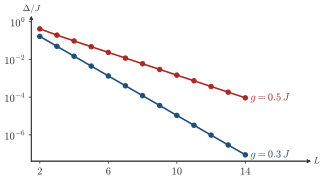
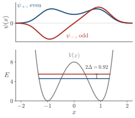

Advanced Quantum Materials 2027 · All lectures · Lecture notes
Session 1. Second Quantization, Mean-Field, and Spontaneous Symmetry Breaking
1.11a Spontaneous symmetry breaking and why a symmetric Hamiltonian can have an asymmetric ground state
Why do the symmetries of the Hamiltonian so often not survive in the ground state? We will now see that a symmetric energy can have minima that are not symmetric, and that a finite system tunnels between them, with a splitting that goes to zero only in the thermodynamic limit. Before we discuss interactions, we ask this general question, since everything that we do in the rest of the session is an example of it. Physical theories usually have a lot of symmetry. Space is symmetric, time is symmetric, and so on. However, reality is not symmetric, since an object is in one place and not in another, and a system evolves forward in time and usually not backward.
Let us start with an example from daily life, which is a group of colleagues who sit at a table for a meal, with bread on both sides of each person. Each person has to choose between the bread on the left and the bread on the right. There is of course a “correct” answer from etiquette, but let us say that nobody knows it. Some people will take the left one and others the right one. Once the choice is made, everybody at the table ends up in one of two equally good configurations, which are everybody-left or everybody-right. The initial setup, with bread on both sides, was perfectly symmetric. The final result is not. This difference, a symmetric problem with a solution that is not symmetric, is spontaneous symmetry breaking on a small scale.
The same logic, in an exact form, is what happens in a classical Ising ferromagnet. The set of ground states of the Hamiltonian is symmetric, since all spins up is as good a solution as all spins down. However, if we take a very large system, which formally means an infinitely large one, or the thermodynamic limit, the system has to choose one of the two, all spins up or all spins down. Which one we measure is decided by fluctuations and not by the Hamiltonian. Once it is decided, the state that we observe is no longer symmetric, even though the Hamiltonian that produced it was always symmetric.
The requirement of the thermodynamic limit is essential. Strictly speaking, spontaneous symmetry breaking is a statement about infinite systems, and it is a generic feature of many-body interactions and correlations, not something that appears for a few particles. Figure 1.2 puts all of this in one picture. It shows a symmetric energy landscape whose minima are not symmetric, with a barrier between them that becomes impossible to cross only in the thermodynamic limit.

In a quantum system the barrier is crossed by tunneling, and we can compute how this tunneling dies out when the system grows. The simplest example is a quantum Ising chain, where a small transverse field flips the spins one at a time.
A symmetric Hamiltonian can have two minima that are not symmetric, and the symmetry maps one onto the other. A finite system tunnels between them, so its two lowest states are the even and the odd combination of the two minima, split by a finite energy \(\Delta\). The ground state has the same weight on both minima, so it is symmetric. For the open Ising chain of \(L\) spins
\[H=-J\sum_i\sigma^z_i\sigma^z_{i+1}-g\sum_i\sigma^x_i,\]
with a transverse field \(g\ll J\), the splitting is
\[\Delta\approx 2J\left(\frac{g}{J}\right)^L,\]
so it vanishes only when \(L\to\infty\).
The steps Why the splitting falls exponentially with the length of the chain
We take the coupling \(J\) as the starting point and the field \(g\) as a perturbation. At \(g=0\) the two lowest states are all spins up, \(|{\Uparrow}\rangle\), and all spins down, \(|{\Downarrow}\rangle\), both with the energy \(E_0=-J(L-1)\). The term \(-g\sigma^x_i\) flips one spin, so it only joins two states that differ by one spin. To go from \(|{\Uparrow}\rangle\) to \(|{\Downarrow}\rangle\) it has to act \(L\) times, so the lowest order of perturbation theory that joins the two states is the order \(L\). It gives the effective coupling
\[t_L=\sum_{\text{orders}}\frac{(-g)^L}{(E_0-E_1)(E_0-E_2)\cdots(E_0-E_{L-1})},\]
where the sum runs over the \(L!\) orders in which the spins are flipped, and \(E_k\) is the energy after \(k\) flips. Each bond between two opposite spins costs \(2J\), so every denominator is of the order of \(J\), and \(t_L\) is of the order of \(J(g/J)^L\). The lower orders also shift the energy of each of the two states, but by the same amount for both, since the flip of all spins maps one onto the other. So they do not split the two states, and only \(t_L\) does.
The simplest case is one spin, \(L=1\). There \(-g\sigma^x\) joins up and down directly, and the splitting is \(2g\). For \(L=2\) the two orders go through \(|{\uparrow\downarrow}\rangle\) or through \(|{\downarrow\uparrow}\rangle\), each with one bond between opposite spins, so \(E_1-E_0=2J\) and
\[t_2=2\cdot\frac{g^2}{-2J}=-\frac{g^2}{J}.\]
The same order also shifts both states by \(-g^2/J\), through one flip and back, so the two states \((|{\Uparrow}\rangle\pm|{\Downarrow}\rangle)/\sqrt2\) have the energies \(E_0-g^2/J\pm t_2\). The even one is lower, at \(E_0-2g^2/J\), and the splitting is \(2g^2/J\). The exact energies of two spins are \(-\sqrt{J^2+4g^2}\) and \(-J\), so the exact splitting is \(\sqrt{J^2+4g^2}-J\), which is \(2g^2/J\) for \(g\ll J\).
For \(L=3\) there are six orders. The two orders that flip the spins from one end to the other keep one bond between opposite spins at every step, and each gives \(1/(4J^2)\). The other four pass once through a state with two such bonds, and each gives \(1/(8J^2)\). So the sum is \(1/J^2\). The same sum is \(1/J^{L-1}\) for every \(L\) that we checked, up to \(L=7\), so \(t_L=-g^L/J^{L-1}\) and
\[\Delta\approx2|t_L|=2J\left(\frac{g}{J}\right)^L.\]
For \(g=0.3J\) this gives \(1.46\times10^{-3}J\) at \(L=6\) and \(1.31\times10^{-4}J\) at \(L=8\). The exact diagonalization of Schematic 1.9 gives \(1.33\times10^{-3}J\) and \(1.19\times10^{-4}J\), smaller by the factor \(1-(g/J)^2=0.91\), which comes from the higher orders. In both cases the ratio of the two values is \(11.1=(J/g)^2\), meaning that two more sites make the splitting smaller by the factor \((g/J)^2\).
Schematic 1.9 shows this splitting from the exact diagonalization of chains of up to 14 spins.

Why is spontaneous symmetry breaking strictly a statement about infinite systems?
Show the answers
- A. ✗ False
This is false. Take two Ising spins with \(H=-J\sigma_1\sigma_2\). It is invariant under the flip of both spins for any finite size. The symmetry of \(H\) does not depend on the size.
- B. ✓ True
This is true. The system can cross the barrier between the two minima, and the true ground state is the symmetric superposition of both. The barrier grows with the system size, and in the thermodynamic limit it cannot be crossed.

The two lowest states of a double well, with \(\hbar^2/2m=1\) and \(V=8(x^2-1)^2\), so the minima are at \(x=\pm1\) and the barrier is \(8\) high. Above are the two wave functions, and below the potential with the two levels. The lower state is even and has weight in both wells, and the odd one is \(2\Delta=0.92\) higher, where \(\Delta\) is the tunneling amplitude between the two wells. A higher barrier makes \(\Delta\) smaller. - C. ✗ False
This is false. The matrix \(\begin{pmatrix}0&-\Delta\\-\Delta&0\end{pmatrix}\) of the two minima has the ground state \((1,1)/\sqrt2\) with energy \(-\Delta\). A finite matrix always has a lowest level, and here it is symmetric.
Tunneling between the minima restores the symmetry in any finite system.
The open Ising chain of \(L\) spins is
\[H=-J\sum_i\sigma^z_i\sigma^z_{i+1}-g\sum_i\sigma^x_i.\]
Its two lowest states are split by \(\Delta\). How does \(\Delta\) depend on \(L\) for \(g\ll J\)?
Show the answers
- A. ✗ False
This is false. Then two more sites, from \(L=6\) to \(L=8\), would make \(\Delta\) smaller by \(8/6=4/3\). For \(g=0.3J\) the exact diagonalization gives a factor \(11.1\).
- B. ✓ True
This is true. To join all spins up with all spins down, the field has to flip all \(L\) spins, so the lowest order of perturbation theory that splits the two states is the order \(L\). For \(g=0.3J\) the splitting is \(1.33\times10^{-3}J\) at \(L=6\) and \(1.19\times10^{-4}J\) at \(L=8\), smaller by \(11.1=(J/g)^2\).
- C. ✗ False
This is false. For \(g=0.3J\) the splitting is \(1.33\times10^{-3}J\) at \(L=6\) and \(1.19\times10^{-4}J\) at \(L=8\), so it changes by a factor \(11.1\) at the same \(g\).
The splitting falls exponentially with \(L\), so it vanishes only in the thermodynamic limit.
A small field \(h\) breaks the symmetry between the two minima. In the basis of the two minima the Hamiltonian is
\[H=\begin{pmatrix}-h&-\Delta\\-\Delta&h\end{pmatrix},\]
where \(\Delta\) is the tunneling amplitude, so at \(h=0\) the splitting is \(2\Delta\). Note that for the Ising chain above \(\Delta\) is the splitting itself, so it is twice the amplitude of this matrix. Show that the weight of the ground state on the first minimum is \(\tfrac12\big(1+h/\sqrt{h^2+\Delta^2}\big)\), and compute it for \(h=\Delta\) and for \(h=10\Delta\).
Solution
We write \(R=\sqrt{h^2+\Delta^2}\). The eigenvalues of \(H\) are \(\pm R\), and the ground state \((a,b)\) has the energy \(-R\). Its first row gives \(-ha-\Delta b=-Ra\), so \((R-h)\,a=\Delta\,b\). With \(a^2+b^2=1\) and \(\Delta^2=R^2-h^2=(R-h)(R+h)\) we get
\[a^2=\frac{\Delta^2}{\Delta^2+(R-h)^2}=\frac{\Delta^2}{2R(R-h)}=\frac{R+h}{2R}=\frac12\left(1+\frac{h}{\sqrt{h^2+\Delta^2}}\right).\]
At \(h=0\) the weight is \(\tfrac12\), which is the symmetric state. For \(h=\Delta\) it is \(0.85\), and for \(h=10\Delta\) it is \(0.998\).
What matters is the ratio \(h/\Delta\) and not \(h\) itself. In a large system the tunneling between the minima is tiny, since it falls as \((g/J)^L\) for the Ising chain. So a field that is small on any other scale is still much larger than \(\Delta\), and the ground state sits in one minimum. This is why a large magnet in the lab, or each domain of it, shows one sign of its magnetization, chosen by a small stray field or by a fluctuation.
- Section 6.2 comes back to this logic for magnets, before the Hubbard model is solved again in mean field.
- In Section 8.3 two dimers are compared, one with a classical order parameter and one with a quantum singlet that breaks no symmetry.
- In Section 10.6 the local order parameters of this session are compared with topological order, which has no local order parameter.